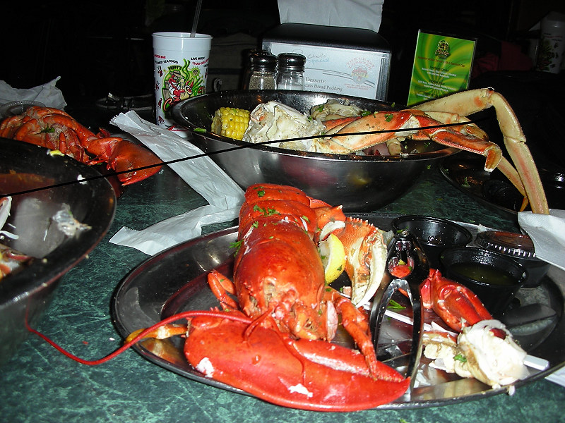

Johnnie and Oberta Baker's Photo Album Gallery Previous Next
|

We went here twice. The first time we erred and order the steamed bowl for 2. Luckily our hotel had a refrigerator so we could take some of this with us. Cold seafood tastes as good as hot seafood. We also had a microwave so we could have heated it if we had wanted to. |